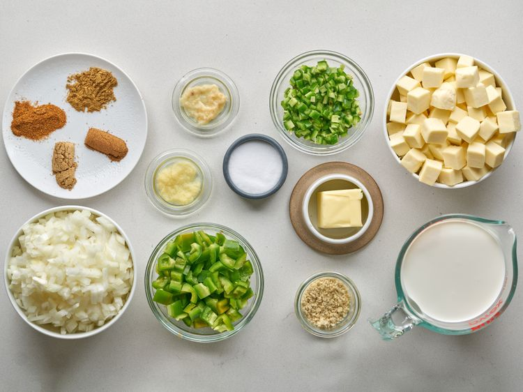
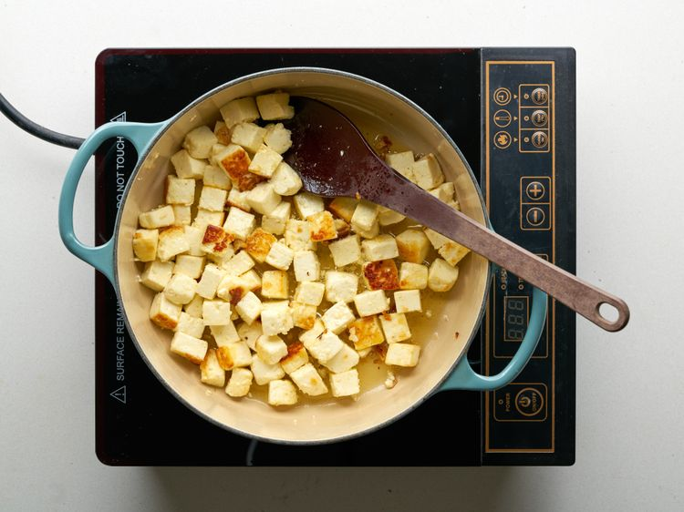
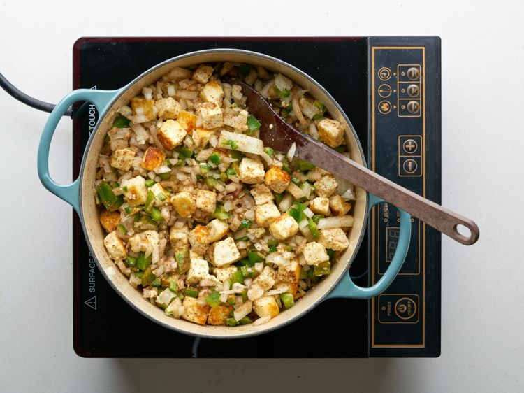
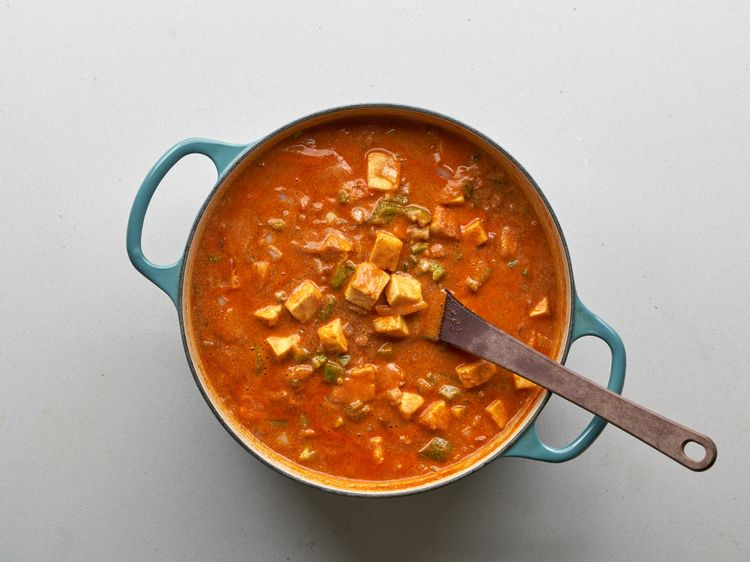

Ingredients
- ¼ cup butter
- 1 pound paneer, cut into 1/2-inch cubes
- 2 medium onions, finely chopped
- 1 medium green bell pepper, chopped
- 2 medium jalapeño peppers, chopped
- 1 tablespoon ground cashews
- 1 teaspoon garlic paste
- 1 teaspoon ginger paste
- 1 teaspoon cayenne pepper
- 1 teaspoon ground cumin
- 1 teaspoon ground coriander
- 1 teaspoon garam masala
- 1 (16 ounce) can tomato sauce
- 1 pint half-and-half
- 1 teaspoon salt, or to taste
Directions
Step 1
Gather all ingredients.
Step 2
Melt butter in a skillet over medium heat. Add paneer cubes; cook and stir until golden, about 5 minutes.
Step 3
Add onions, bell pepper, jalapeños, ground cashews, garlic paste, ginger paste, cayenne pepper, cumin, coriander, and garam masala; cook and stir until well combined and fragrant, about 1 minute.
Step 4
Mix tomato sauce, half-and-half, and salt into paneer mixture; simmer until thickened, about 30 minutes.
